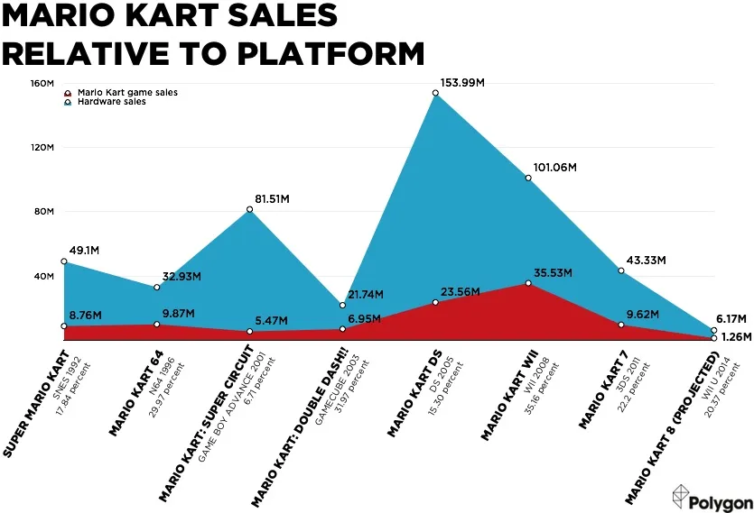
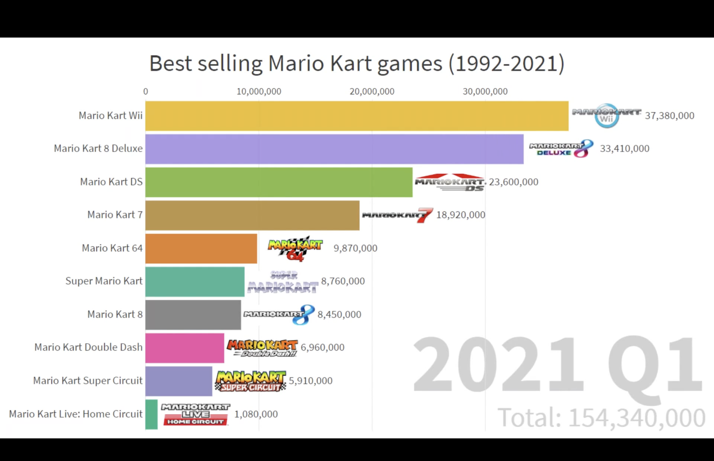

MarioKart Intro Stats
 As depicted you can see, mariokart picked up in popularity along side consoles that did well, as nintendo did worse with the launch of the Wii U, mariokart was all but doomed.
Later Versions of Mario Kart have done the Best
 Despite the poor success of the Wii U, Mariokart 7, MarioKart 8 and MarioKart 8 Deluxe Have done really well.